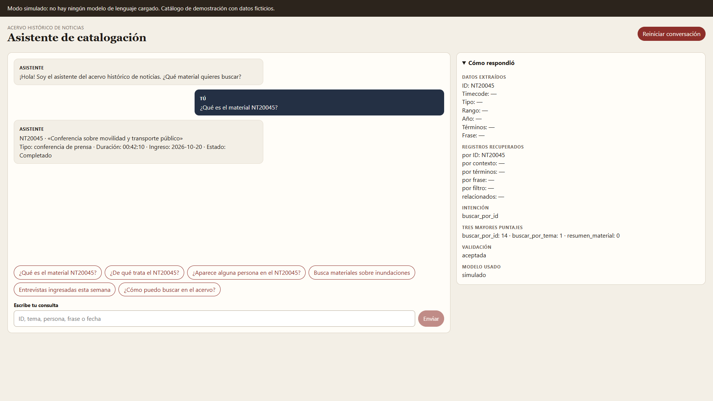
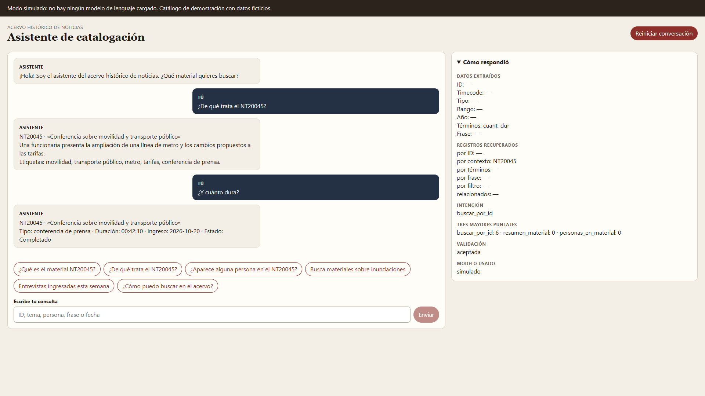
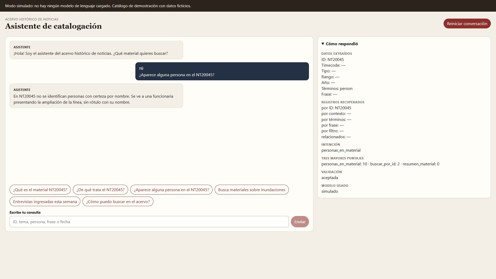
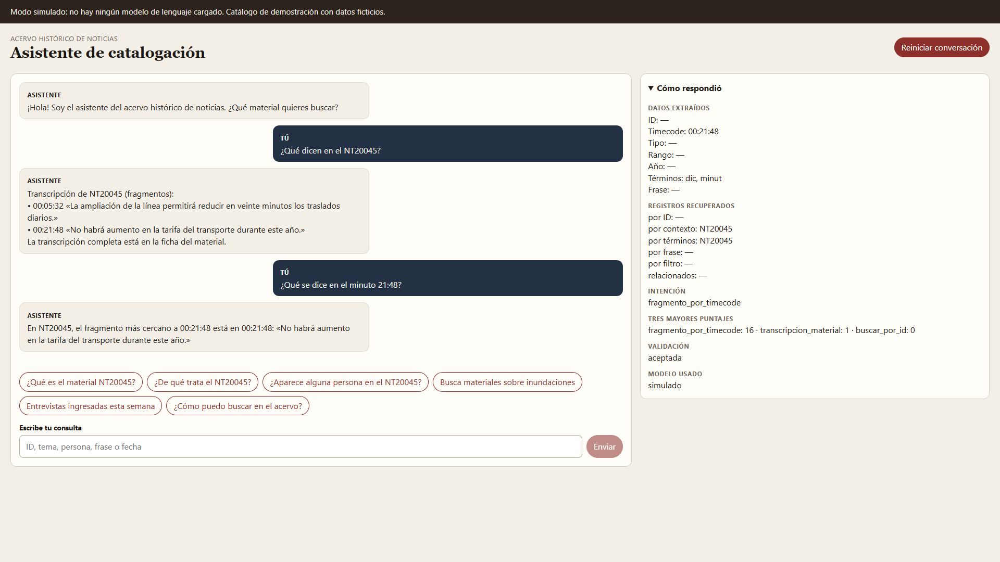
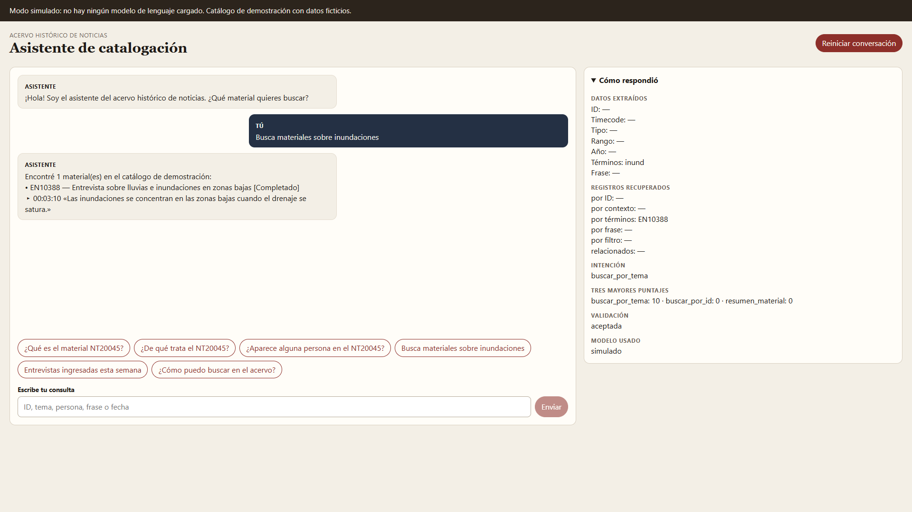
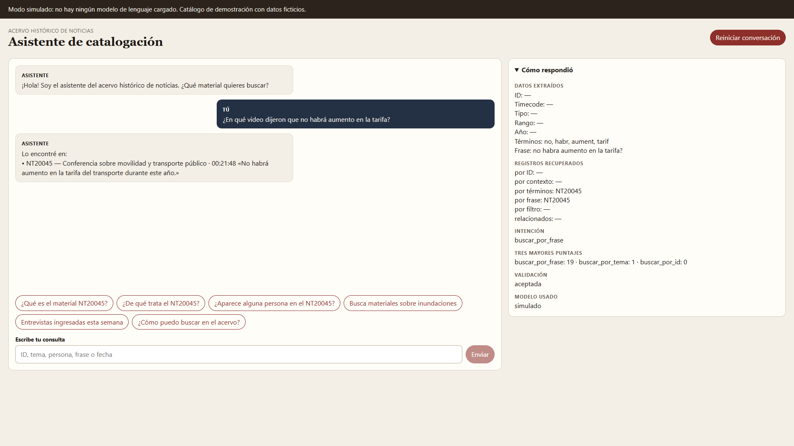
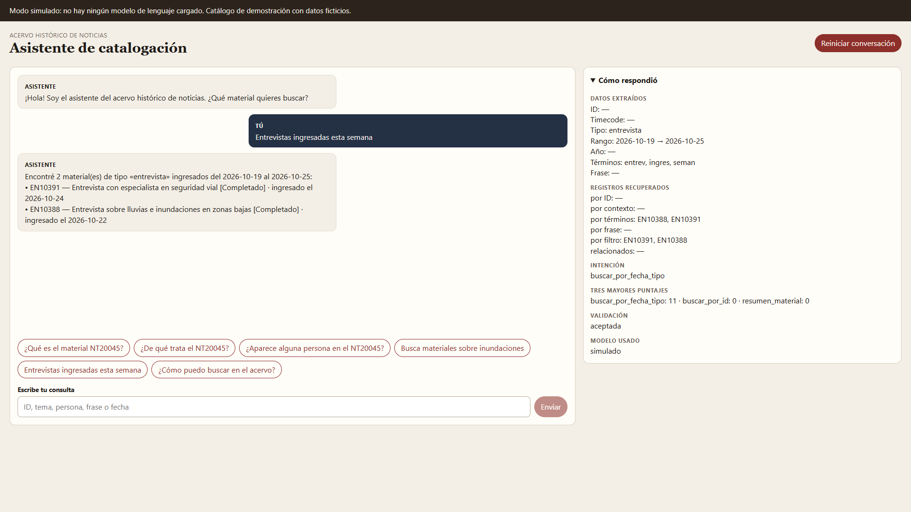
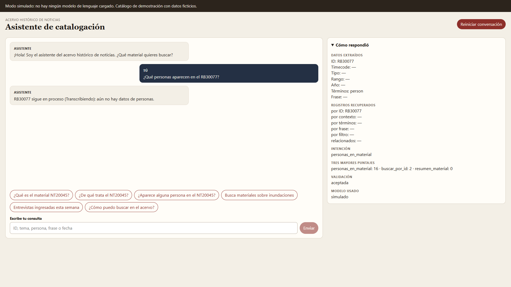
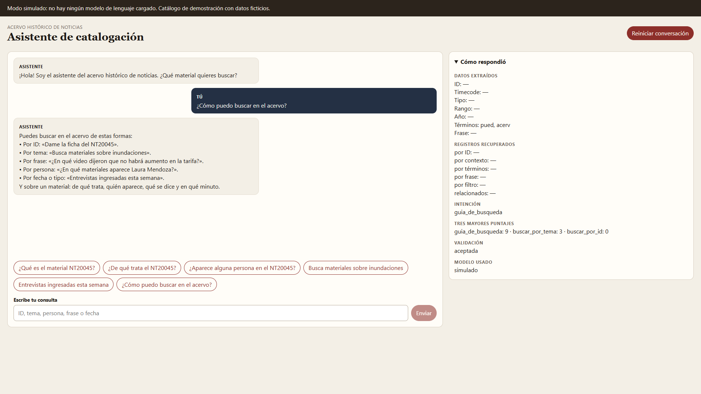
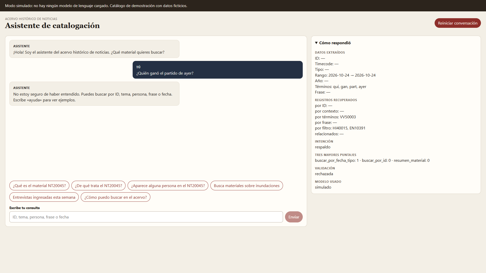

1. Ficha por ID

Primera versión de Catalogación: maqueta del asistente del acervo, en modo simulado y con catálogo ficticio. Las capturas se tomaron el 25 de octubre de 2026 en http://localhost:3000, con el panel «Cómo respondió» abierto.
No hay un modelo de lenguaje cargado. Cada mensaje pasa por extracción, recuperación, plantillas del modelo simulado y validación de citas. El adaptador de LM Studio está escrito y no se usó.
src/data/baseConocimiento.json — catálogo, intenciones y plantillas.src/chatbot/textoUtils.js — normalización, raíces y fechas fijas.src/chatbot/extraccionDatos.js — ID, tiempo, tipo, rango, frase.src/chatbot/recuperacion.js — índice del acervo.src/chatbot/modeloSimulado.js — puntajes y textos, sin IA.src/chatbot/validacion.js — IDs y timecodes citados.src/chatbot/chatbot.js — orquestador y respaldo.src/components y src/hooks/useChatbot.js — interfaz.Dockerfile y docker-compose.yml — ejecución sin Node en Windows.









palabras_relacionadas. No aparece en una búsqueda por tema.MODO_MODELO: 'lmstudio' y mantener la validación de IDs y timecodes antes de mostrar el texto.